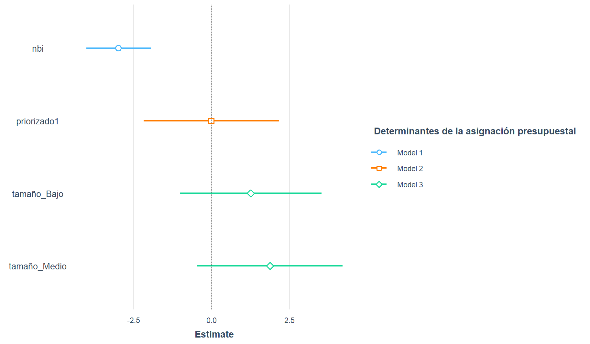

#getwd()
#setwd("")
library("rio")
dataPAVI = import("./data/s12/b-pavimentando con votos.sav")12 Regresión Lineal II
Co-author: Luis Valverde
- Pavimentando con votos
#names(dataPAVI)
#str(dataPAVI)12.1 Formateo: DISTINGAMOS LAS VARIABLES NUMERICAS Y (NOMINALES) DICOTOMICAS
# forma corta
dataPAVI[,c(1:2, 5, 7:8)] = lapply(dataPAVI[,c(1:2, 5, 7:8)],as.numeric)
dataPAVI[,c(3:4, 6)] = lapply(dataPAVI[,c(3:4, 6)],as.factor)# forma larga
#dataPAVI$poblacioncienmil = as.numeric(dataPAVI$poblacioncienmil)
#dataPAVI$nbi = as.numeric(dataPAVI$nbi)
#dataPAVI$consejocomunal = as.factor(dataPAVI$consejocomunal)
#dataPAVI$priorizado = as.factor(dataPAVI$priorizado)
#dataPAVI$uribista = as.numeric(dataPAVI$uribista)
#dataPAVI$ejecucion = as.factor(dataPAVI$ejecucion)
#dataPAVI$apropiaciondolar = as.numeric(dataPAVI$apropiaciondolar)
#dataPAVI$pctopo = as.numeric(dataPAVI$pctopo)13 Si la variable independiente es numérica
- HIPOTESIS: La asignación presupuestal se explica por el indicador de necesidades básicas insatisfechas
modelo1 = lm(apropiaciondolar ~ nbi, data = dataPAVI)
summary(modelo1)
Call:
lm(formula = apropiaciondolar ~ nbi, data = dataPAVI)
Residuals:
Min 1Q Median 3Q Max
-14.426 -9.326 -5.943 1.937 118.822
Coefficients:
Estimate Std. Error t value Pr(>|t|)
(Intercept) 15.27938 1.22247 12.499 < 2e-16 ***
nbi -0.15924 0.02609 -6.103 1.46e-09 ***
---
Signif. codes: 0 '***' 0.001 '**' 0.01 '*' 0.05 '.' 0.1 ' ' 1
Residual standard error: 15.92 on 1064 degrees of freedom
(30 observations deleted due to missingness)
Multiple R-squared: 0.03382, Adjusted R-squared: 0.03291
F-statistic: 37.25 on 1 and 1064 DF, p-value: 1.455e-09Pr(>|t|) <- 1.46e-09
14 Si la variable independiente es categórica (dicotómica)
- HIPOTESIS: La asignación presupuestal se debe a criterios técnicos
modelo2 = lm(apropiaciondolar ~ priorizado, data = dataPAVI)
summary(modelo2)
Call:
lm(formula = apropiaciondolar ~ priorizado, data = dataPAVI)
Residuals:
Min 1Q Median 3Q Max
-8.277 -8.277 -8.272 1.108 124.371
Coefficients:
Estimate Std. Error t value Pr(>|t|)
(Intercept) 8.277427 0.560554 14.766 <2e-16 ***
priorizado1 -0.005434 1.117040 -0.005 0.996
---
Signif. codes: 0 '***' 0.001 '**' 0.01 '*' 0.05 '.' 0.1 ' ' 1
Residual standard error: 16.05 on 1094 degrees of freedom
Multiple R-squared: 2.163e-08, Adjusted R-squared: -0.0009141
F-statistic: 2.367e-05 on 1 and 1094 DF, p-value: 0.996115 Si la variable independiente es categórica (politómica)
- Creo la variable categórica porque no existe en esta base de datos
library(gtools)
dataPAVI$tamaño = quantcut(dataPAVI$pctopo, q=3)
levels(dataPAVI$tamaño) = c("Bajo","Medio","Alto")15.1 Dictomizo la variable categórica
library(fastDummies)
dataPAVI = dummy_cols(dataPAVI, select_columns = c( "tamaño"))
names(dataPAVI) [1] "poblacioncienmil" "nbi" "consejocomunal" "priorizado"
[5] "uribista" "ejecucion" "apropiaciondolar" "pctopo"
[9] "inversion" "tamaño" "tamaño_Bajo" "tamaño_Medio"
[13] "tamaño_Alto" "tamaño_NA" - HIPOTESIS: La asignación presupuestal se debe al tamaño de población de las comunas
modelo3 = lm(apropiaciondolar ~ tamaño_Bajo + tamaño_Medio, data = dataPAVI)
summary(modelo3)
Call:
lm(formula = apropiaciondolar ~ tamaño_Bajo + tamaño_Medio,
data = dataPAVI)
Residuals:
Min 1Q Median 3Q Max
-9.126 -8.507 -7.246 1.972 123.517
Coefficients:
Estimate Std. Error t value Pr(>|t|)
(Intercept) 7.2463 0.8438 8.588 <2e-16 ***
tamaño_Bajo 1.2609 1.1933 1.057 0.291
tamaño_Medio 1.8794 1.1933 1.575 0.116
---
Signif. codes: 0 '***' 0.001 '**' 0.01 '*' 0.05 '.' 0.1 ' ' 1
Residual standard error: 16.08 on 1086 degrees of freedom
(7 observations deleted due to missingness)
Multiple R-squared: 0.002367, Adjusted R-squared: 0.00053
F-statistic: 1.288 on 2 and 1086 DF, p-value: 0.276116 COMPARANDO LOS MODELOS
library(stargazer)
tabla = stargazer(modelo1,modelo2,modelo3, type = "text")
========================================================================================
Dependent variable:
--------------------------------------------------------------------
apropiaciondolar
(1) (2) (3)
----------------------------------------------------------------------------------------
nbi -0.159***
(0.026)
priorizado1 -0.005
(1.117)
tamaño_Bajo 1.261
(1.193)
tamaño_Medio 1.879
(1.193)
Constant 15.279*** 8.277*** 7.246***
(1.222) (0.561) (0.844)
----------------------------------------------------------------------------------------
Observations 1,066 1,096 1,089
R2 0.034 0.00000 0.002
Adjusted R2 0.033 -0.001 0.001
Residual Std. Error 15.921 (df = 1064) 16.052 (df = 1094) 16.077 (df = 1086)
F Statistic 37.247*** (df = 1; 1064) 0.00002 (df = 1; 1094) 1.288 (df = 2; 1086)
========================================================================================
Note: *p<0.1; **p<0.05; ***p<0.01tabla = write.csv(tabla,"tablaRegresion.csv")
#install.packages("jtools")
library(jtools)
#install.packages("ggstance")
library(ggstance)
#install.packages("broom.mixed")
library(broom.mixed)testplot1 <- plot_summs(modelo1,modelo2,modelo3,legend.title="Determinantes de la asignación presupuestal",scale = TRUE, robust = TRUE)
testplot1
Interpretación: